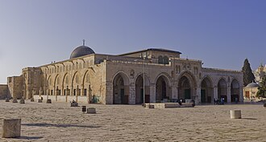

Apresentação
La mosquée al-Aqsa ou al-Aksa est la plus grande mosquée de Jérusalem-Est. Elle a été construite au VIIe siècle sur l'esplanade des Mosquées, à proximité du dôme du Rocher. Selon la tradition musulmane, le deuxième calife Omar ibn al-Khattâb a commencé à bâtir la mosquée en 637 à l'emplacement sacré d'où le prophète Mahomet se serait élevé au ciel lors du voyage nocturne selon le premier verset de la sourate Al-Isra dans le Coran
المصلى القِبْلي أو الجامع القِبْلي هو إحدى مصليات المسجد الأقصى ومعلم من معالمه، فهو المبنى المسقوف الذي تعلوه قبة رصاصية، يبلغ طوله (80) متراً، وعرضه (55) مترا، وتمتد مساحته على (4500) متر مربع، يقوم على (53) عموداً من الرخام، و(49) سارية مربعة الشكل، ويتسع اليوم لنحو (5500) مصل، وله (11) باباً، يقع جنوبي المسجد الأقصى باتجاهِ القبلة ومن هنا جاءت تسميته بالقِبلي.
The Aqsa Mosque, also known as the Qibli Mosque, is the main congregational mosque or prayer hall in the Al-Aqsa mosque compound in the Old City of Jerusalem. In some sources the building is also named al-Masjid al-Aqṣā, but this name primarily applies to the wider compound in which the building sits, which is itself also known as 'al-Aqsa Mosque', 'al-Aqsa' or 'Haram al-Sharif'.
Mescid-i Aksa, aynı zamanda Kıble Camii veya Kıble Mescidi olarak da bilinir,, Kudüs'ün Eski Şehir bölgesinde bulunan Mescid-i Aksa kompleksindeki ana cemaat camisi veya namazgahıdır. Bazı kaynaklarda binaya el-Mescid-i Aksa da denmektedir, ancak bu isim esas olarak binanın bulunduğu ve kendisi de "El-Aksa Camii" olarak bilinen tüm yapı için geçerlidir. Daha geniş kompleks, Mescid-i Aksa cami kompleksi olarak bilinir, ayrıca Harem-i Şerif olarak da bilinir.
مسجد اقصی کی قریبی سنہری گنبد والی عمارت کے لیے دیکھیے قبۃ الصخرۃ
Die al-Aqsa-Moschee oder Al-Aksa-Moschee auf dem Tempelberg in der Jerusalemer Altstadt gilt als drittwichtigste Moschee des Islams nach der al-Harām-Moschee mit dem zentralen Heiligtum der Kaaba in Mekka und der Prophetenmoschee mit dem Grab des Propheten Mohammed in Medina. Zu der Moschee gehören vier Minarette.
La mezquita de Al-Aqsa o mezquita de Qibli, también llamada mezquita de Jerusalén[cita requerida] es parte del complejo religioso de la Explanada de las Mezquitas de la ciudad santa de Jerusalén. El nombre árabe Masyid al-Aqsa se traduce como «la mezquita más lejana», en referencia al capítulo del Corán llamado «El Viaje nocturno», en el que se dice que Mahoma viajó de La Meca a la «mezquita más lejana» en el año 621 y desde allí ascendió a los Cielos a lomos de un equino alado llamado al-Buraq al-Sharif.
La moschea al-Aqṣā fa parte di quel complesso di edifici religiosi di Gerusalemme che è chiamato Monte Majid, o al-Ḥaram al-Sharīf, da parte dei musulmani, Har ha-Bayit dagli ebrei, e tempio di Salomone dai cristiani, soprattutto in epoca medievale. La moschea è situata nella parte orientale di Gerusalemme, un territorio conteso, governato da Israele da quando è stato occupato con la guerra dei sei giorni nel 1967 ma rivendicato dai palestinesi come parte dello Stato di Palestina. È la più grande moschea di Gerusalemme e può ospitare circa cinquemila fedeli all'interno e attorno a essa.
Mesquita de Al-Aqsa, também conhecida como Mesquita de Quibli, é a principal mesquita congregacional ou salão de orações no complexo da mesquita de Al-Aqsa, na Cidade Velha de Jerusalém. Em algumas fontes, o edifício também é chamado de al-Masjid al-Aqṣā, mas esse nome se aplica principalmente a todo o complexo onde o edifício está situado, que também é conhecido como "Mesquita Al-Aqsa". O complexo mais amplo é conhecido como Al-Aqsa ou complexo da mesquita de Al-Aqsa, também conhecido como al-Ḥaram al-Sharīf.
De Al-Aqsamoskee of El-Aksamoskee is een islamitische moskee in de Oude Stad Jeruzalem, gebouwd op een steenworp afstand van de Rotskoepel op de zuidzijde van de Tempelberg . De Al-Aqsamoskee is de grootste moskee van Jeruzalem met plaats voor ongeveer 5.000 mensen. Het is een van de drie heilige plaatsen van de islam, na de Ka'aba in Mekka en de Moskee van de Profeet in Medina. De religieuze gebouwen op de Tempelberg worden beheerd door een Jordaanse islamitische waqf. Conform een afspraak in 1967 over de status van de Haram al-Sharif is bezoek van de berg toegestaan onder voorwaarde dat er niet op gebeden wordt. De moskee is alleen voor moslims toegankelijk.
アル＝アクサー・モスク は、エルサレム旧市街の「神殿の丘」あるいは「ハラム・シャリーフ」 と呼ばれる聖域の南に、ウマイヤ朝時代に創建されたモスクである。銀のドームとも呼ばれる。
알아크사 모스크(아랍어: المسجد الأقصى; 히브리어: מסגד אל-אקצא; Al-Aqsa Mosque)는 성전산 남쪽에 위치한 은색 둥근 지붕의 이슬람교 사원이다. 메디나, 메카와 더불어 이슬람교 3대 성지의 하나로 8세기 압델 말릭과 그의 아들에 의해 건설되었으며, 십자군 시대에는 십자군의 왕궁으로 사용되기도 했다. 엘 악사 사원은 원래 비잔틴 시대의 교회를 모스크로 만든 것인데, 그 후 지진 등으로 훼손되어 수차례 수리되었으며, 현재의 건물은 1066년에 준공되었다. 사원 내부는 7개의 홀로 되어 있고 스테인글래스와 타일로 아름답게 꾸며져 있다.
मस्जिदुल-अक़्सा यरूशलम (क़ुद्स) में स्थित यह मस्जिद इस्लाम धर्म में मक्का और मदीना के बाद तीसरा पवित्र स्थल है। यरूशलम पैग़ंबर मुहम्मद के जीवनकाल के दौरान और उनकी मृत्यु के तुरंत बाद के वर्षों के दौरान एक दूरदर्शी प्रतीक रहा जैसा कि मुस्लिमों ने इराक़ और उसके बाद सीरिया को नियंत्रित किया लेकिन यरुशलम 640 ईस्वी के दशक में मुस्लिमों के नियन्त्रण आया था, जिसके बाद यरूशलम एक मुस्लिम शहर बन गया और यरूशलम में अल अक्सा मस्जिद मुस्लिम साम्राज्य में सबसे महत्वपूर्ण धार्मिक स्थलों में से एक बनी। यह मस्जिद प्राचीन काल से ही विवादित रही है क्योंकि यहूदी लोग इसे अपने मंदिर होने का दावा करते हैं। ऐतिहासिक तथ्यों के अनुसार 957 ईशा पूर्व में यहूदीयों ने यरूशलम में पहला यहूदी मंदिर बनाया था और उसके बाद 352 ईशा पूर्व में दूसरा यहूदी मंदिर बनावाया। इसके बाद 561 ईश्वीं में ईसाइयों ने यरूशलम में ही सेंट मेरी चर्च का निर्माण किया। मुश्लिमों एक जिसे 'डोम आॅफ द रोक्स'(dome of the rocks) के नाम से जाना जाता है।
Соборная мечеть Аль-А́кса расположена на Храмовой горе Иерусалима. Является третьей святыней ислама после мечети аль-Харам в Мекке и Мечети Пророка в Медине. В мечети одновременно могут молиться до 5000 верующих.
Nhà thờ Hồi giáo Al-Aqsa, còn được gọi là al-Aqsa, là một nơi thánh đường Hồi giáo ở Phố cổ của Jerusalem, là địa điểm thiêng liêng thứ 3 của Hồi giáo. Nơi có nhà thờ Hồi giáo này cũng được gọi là al-haram ash-Sharif hay "thánh địa linh thiêng", một địa điểm cũng được gọi là Núi ngôi đền, địa điểm linh thiêng nhất trong Do Thái giáo, nơi mà ngôi đền thứ nhất và thứ hai thường được người ta tin là đã từng toạ lạc. Được nhiều người coi là nơi linh thiêng thứ ba trong Hồi giáo, những người Hồi giáo tin rằng Muhammad đã được vận chuyển từ Nhà thờ Hồi giáo linh thiêng ở Mecca đến al-Aqsa trong Hành trình đêm. Truyền thống Hồi giáo cho rằng Muhammad đã dẫn những người cầu nguyện hướng về nơi này cho đến tháng mười bảy sau khi di cư, khi Thánh ra lệnh cho ông để trở về với các Ka'aba.
มัสยิดอัลอักศอ เรียกอย่างถูกต้องว่า ญามิอุลอักศอ มีอีกชื่อว่า มัสยิดกิบลี หรือ มุศ็อลลากิบลี เป็นมัสยิดรวมหรือหอละหมาดในย่านเมืองเก่าของเยรูซาเลม บางข้อมูลให้ชื่ออาคารนี้ว่า มัสยิดอัลอักศอ แต่ชื่อนี้เป็นที่โต้แย้ง เนื่องจากสามารถใช้กับพื้นที่ทั้งหมดที่เป็นที่ตั้งของอาคารได้ พื้นที่ที่กว้างกว่ามีอีกชื่อว่า ฮะรอมุชชะรีฟ ประกอบด้วยพื้นที่มัสยิดอัลอักศอและเนินพระวิหาร
al-Aqsamoskén är en moské på Tempelberget i Jerusalem som uppfördes av kalifen Umar ibn al-Khattab år 638. Den var ursprungligen uppförd av trä men ersattes av en moské i sten av kalif Abd al-Malik efter färdigställandet av den närbelägna Klippdomen och var klar omkring 705.
Moscheea Al-Aqsa sau Moscheea Al-Qibli este un lăcaș de cult islamic prevăzut cu o cupolă de argint, care face parte din complexul religios musulman Al Haram al Qudsi ash-Sharif sau Al Haram ash Sharif de pe Muntele Templului din Ierusalim. Tradiția musulmană afirmă că acesta este muntele unde patriarhul Ibrahim (Avraam) a vrut să-l sacrifice pe fiul său Ismail), după porunca divină, și aici a ajuns mai târziu prorocul Muhammad, fondatorul islamului, în călătoria sa nocturnă pornită din Mecca. El ar fi urcat din acest loc spre cer pentru a vorbi cu trimisul lui Dumnezeu, îngerul Jibril (Gabriel). Acest fapt face ca moscheea să fie cel de-al treilea ca importanță loc sfânt al religiei islamice.
Histórias e relatos
CorãoA Viagem noturna
O Corão conta que Allah fez viajar de noite o Seu servo da Mesquita Sagrada de Meca até “a mesquita mais distante”, al-Aqsa (sura 17, versículo 1). Os hadiths autênticos contam que o Profeta ﷺ dirigiu ali a oração dos profetas antes da ascensão. Al-Aqsa é uma das três mesquitas para as quais se pode viajar especialmente para rezar (al-Bukhari).
Fonte: Coran 17:1 · al-Bukhari 1189
Facto históricoO califa Omar em Jerusalém
Em 637-638, o patriarca Sofrónio aceitou entregar Jerusalém com a condição de o califa vir em pessoa. Omar veio, mandou limpar a esplanada coberta de detritos e mandou ali construir uma simples mesquita de madeira. Crónicas mais tardias contam que ele se recusou a rezar na igreja do Santo Sepulcro, para que os muçulmanos não a tomassem mais tarde.
Fonte: Wikipedia
Hadith autênticoA primeira qibla
Depois da sua chegada a Medina, o Profeta ﷺ rezou durante dezasseis ou dezassete meses em direção a Jerusalém (Bayt al-Maqdis). Desejava no entanto voltar-se para a Caaba. Vieram então os versículos 142 a 144 da sura al-Baqara, que fixam a direção da oração para a Mesquita Sagrada de Meca. Segundo al-Bukhari, fiéis que ainda rezavam em direção a Jerusalém souberam da notícia em plena oração e voltaram-se imediatamente para a Caaba. É por isso que se chama a Al-Aqsa “a primeira das duas qiblas”. Hadith autêntico (sahih).
Fonte: Sahih al-Bukhari 40 · Wikipedia : Qibla
Hadith autênticoA segunda mesquita da terra
O companheiro Abu Dharr perguntou ao Profeta ﷺ qual foi a primeira mesquita construída na terra. Ele respondeu: a Mesquita Sagrada de Meca. E depois qual? A mesquita Al-Aqsa. E quanto tempo entre as duas? Quarenta anos. Este hadith autêntico (al-Bukhari 3366) faz de Al-Aqsa uma das mais antigas casas de oração, muito antes dos edifícios atuais. Os sábios explicam que se trata da primeira fundação do lugar, e não das construções de Salomão ou dos Omíadas.
Fonte: Sahih al-Bukhari 3366
Hadith autênticoOs três pedidos de Salomão
Segundo um hadith transmitido por an-Nasa'i (n.º 693), quando o profeta Salomão (Sulayman) terminou a construção de Bayt al-Maqdis, pediu três coisas a Deus. Um julgamento de acordo com o julgamento de Deus; um reino que ninguém teria depois dele; e que toda a pessoa que viesse a esta mesquita apenas para nela rezar saísse liberta dos seus pecados como no dia do seu nascimento. Os dois primeiros pedidos foram-lhe concedidos, diz o hadith. Este hadith é considerado autêntico (sahih) por al-Albani e pela edição Darussalam.
Fonte: Sunan an-Nasa'i 693
Hadith autênticoUma das três mesquitas da viagem
O Profeta ﷺ disse que só se parte numa viagem de devoção em direção a três mesquitas: a Mesquita Sagrada de Meca, a sua mesquita de Medina e a mesquita Al-Aqsa. Este hadith autêntico é transmitido por al-Bukhari (1189) e Muslim. Coloca Al-Aqsa ao mesmo nível de visita piedosa que as duas grandes mesquitas da Arábia. Há séculos que peregrinos vindos de todo o mundo muçulmano prolongam a sua viagem até Jerusalém por esta razão.
Fonte: Sahih al-Bukhari 1189
Hadith autênticoQuanto vale uma oração em Al-Aqsa?
Os números que circulam não são todos fiáveis, e é preciso dizê-lo. O relato mais sólido vem de Abu Dharr: uma oração na mesquita do Profeta vale mais do que quatro orações em Bayt al-Maqdis, “e que excelente lugar de oração é”. Al-Hakim considerou-o autêntico e adh-Dhahabi aprovou-o. Outros números, como 500 ou 50 000 orações, vêm de relatos considerados fracos: por exemplo Ibn Majah 1413, classificado como fraco (da'if). Os sábios só estão de acordo num ponto: rezar em Al-Aqsa tem um grande mérito.
Fonte: Sunan Ibn Majah 1413 (faible) · HadithAnswers : hadith d'Abu Dharr
Facto históricoA Cúpula da Rocha não é a mesquita Al-Aqsa
Muitas pessoas confundem dois edifícios. A Cúpula da Rocha, de cúpula dourada, foi construída em 691-692 pelo califa omíada Abd al-Malik, por cima da Rocha de onde, segundo a crença muçulmana, começou a ascensão do Profeta. A mesquita de cúpula cinzenta, a sul da esplanada, chama-se mesquita al-Qibli: é a sala de oração principal. Para os muçulmanos, “Al-Aqsa” designa na realidade toda a esplanada, com os seus dois edifícios, os seus pátios e as suas fontes.
Fonte: Wikipedia : Dome of the Rock · Wikipedia : Al-Aqsa Mosque
Facto históricoO nome apagado do construtor
Uma longa inscrição em escrita cúfica corre no interior da Cúpula da Rocha e indica o ano 72 da hégira (691-692). O nome do seu construtor, o califa omíada Abd al-Malik, foi no entanto apagado mais tarde. No seu lugar, escreveu-se o nome do califa abássida al-Ma'mun, que reinou mais de um século depois. Mas o autor da alteração esqueceu-se de mudar a data: ela ainda denuncia o verdadeiro construtor.
Fonte: Wikipedia : Dome of the Rock
Facto históricoDestruída pelos sismos, reconstruída três vezes
A mesquita al-Qibli foi construída pelos Omíadas Abd al-Malik ou o seu filho al-Walid I, no início do século VIII; papiros do Egito falam até dos operários enviados para a construir. Um terramoto arruinou-a em 746. O califa abássida al-Mansur reergueu-a em 758, mandando fundir o ouro e a prata que cobriam as suas portas. Um novo sismo atingiu-a em 1033; o califa fatímida az-Zahir reconstruiu-a mais pequena, e a planta atual data dessa época.
Fonte: Wikipedia : Al-Aqsa Mosque
Facto históricoNo tempo dos cruzados
Em 1099, os cruzados tomaram Jerusalém e a mesquita deixou de ser um lugar de oração muçulmano. O edifício serviu de palácio real, e até de estrebaria. A partir de 1119, tornou-se o quartel-general de uma ordem de monges-cavaleiros, que, aliás, tirou o seu nome do lugar: os Templários. A Cúpula da Rocha, por sua vez, foi transformada em igreja. Esta situação durou 88 anos.
Fonte: Wikipedia : Al-Aqsa Mosque · Wikipedia : Knights Templar
Facto históricoO minbar prometido por Nur ad-Din
Em 1168-1169, o sultão Nur ad-Din mandou fazer em Alepo um minbar de madeira esculpida, obra-prima de marcenaria, prometendo instalá-lo em Al-Aqsa no dia em que Jerusalém fosse retomada. Morreu em 1174 sem ver esse dia. O seu sucessor Salah ad-Din (Saladino) retomou a cidade em 1187, depois de um cerco, e devolveu a mesquita à oração. Mandou então transportar o minbar de Alepo até Al-Aqsa, cumprindo a promessa de Nur ad-Din. O minbar ali ficou quase oito séculos.
Fonte: Wikipedia : Minbar of Saladin · Wikipedia : Siege of Jerusalem (1187)
Facto históricoO incêndio de 1969 e o minbar refeito
A 21 de agosto de 1969, um visitante australiano, Denis Michael Rohan, pegou fogo à mesquita al-Qibli. O minbar de Nur ad-Din foi destruído e uma parte da cúpula e das suas decorações ardeu. Este incêndio provocou uma reunião dos países muçulmanos, da qual nasceu a Organização de Cooperação Islâmica. Artesãos e peritos reunidos na Jordânia reconstruíram depois o minbar igual ao original, peça por peça, segundo as técnicas antigas. O novo minbar foi instalado no seu lugar em 2007.
Fonte: Wikipedia : Al-Aqsa Mosque · Wikipedia : Minbar of Saladin
No mapa
Documentos e ligações
- Wikipédia — Français
- Wikipédia — العربية
- Wikipédia — English
- Wikipédia — Türkçe
- Wikipédia — Bahasa Indonesia
- Wikipédia — اردو
- Wikipédia — Deutsch
- Wikipédia — Español
- Wikipédia — Italiano
- Wikipédia — Português
- Wikipédia — Nederlands
- Wikipédia — 中文
- Wikipédia — 日本語
- Wikipédia — 한국어
- Wikipédia — हिन्दी
- Wikipédia — Русский
- Wikipédia — Tiếng Việt
- Wikipédia — ไทย
- Wikipédia — Svenska
- Wikipédia — Română
- Wikidata — Q12192963
Dados: Wikidata (CC0), atualizados de 3 em 3 meses. O ano é a data de construção mais antiga conhecida do edifício: para um edifício que se tornou mesquita mais tarde (como Santa Sofia), é a do edifício original. Fotos: Wikimedia Commons, autor e licença na página de cada foto.